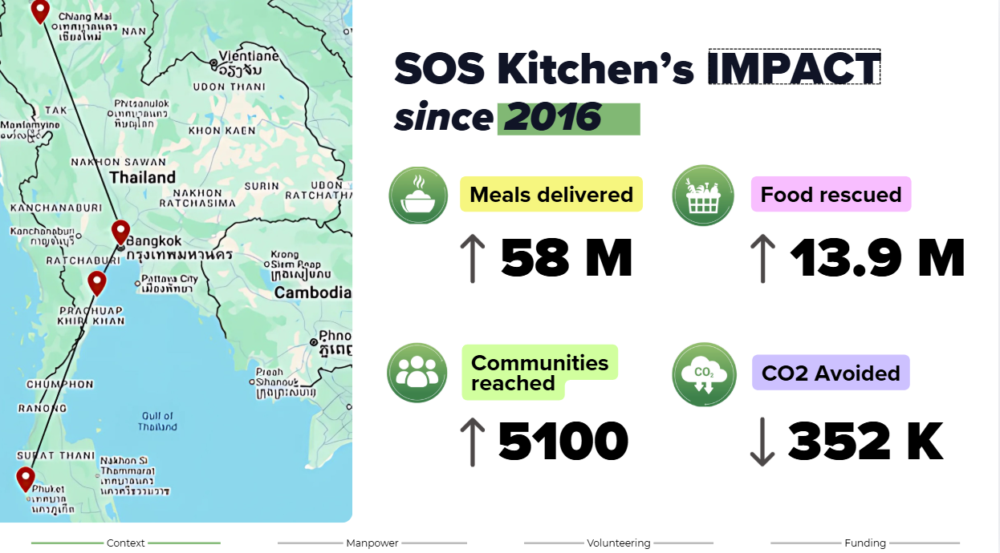
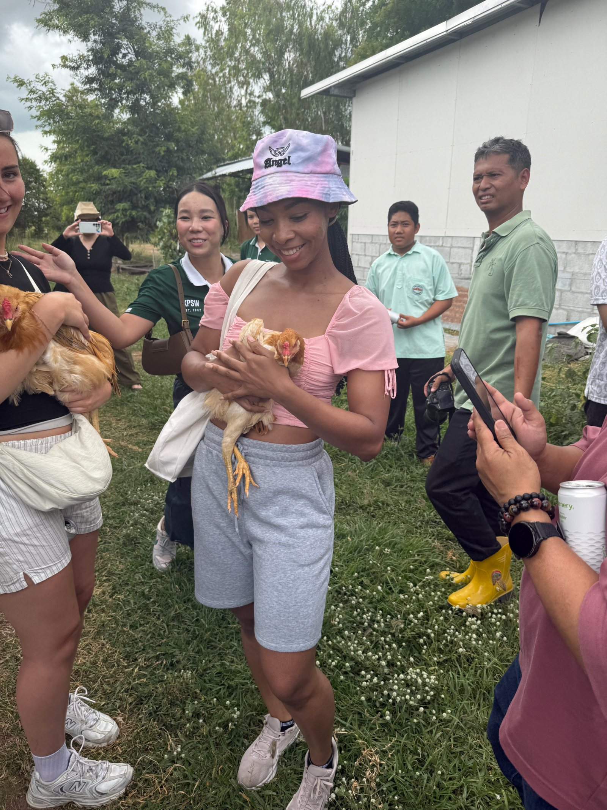
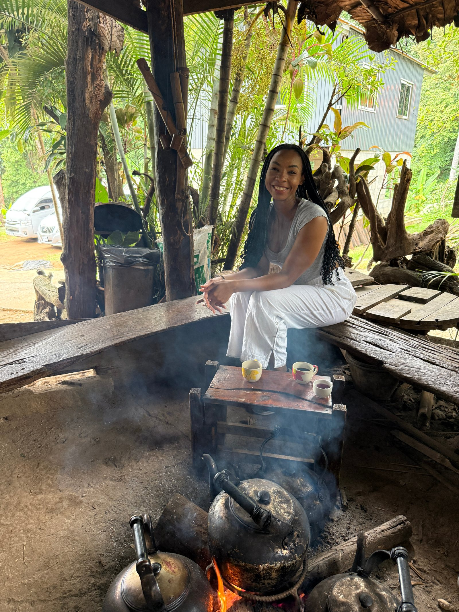
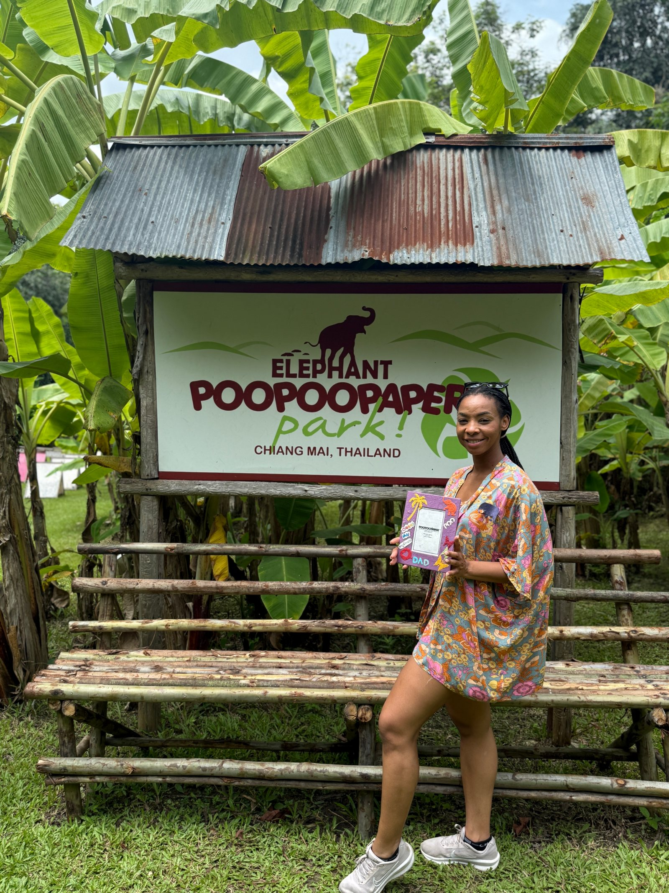
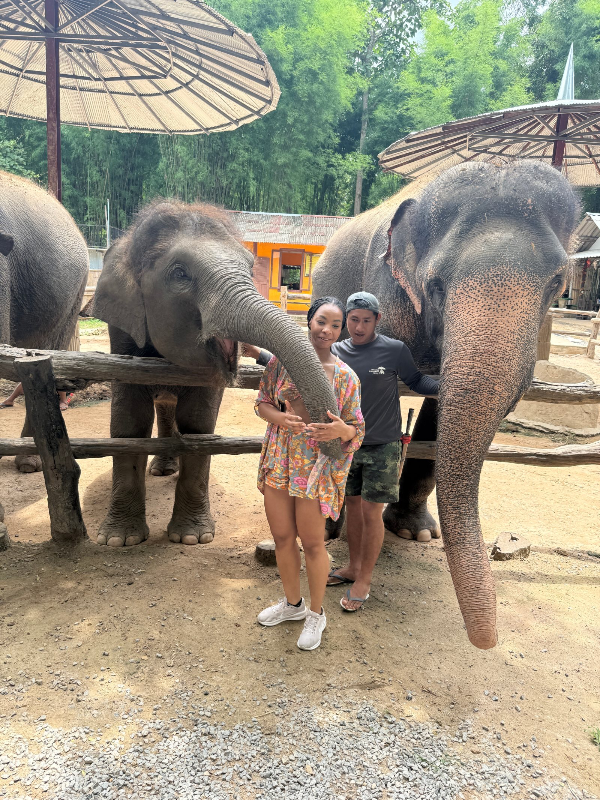
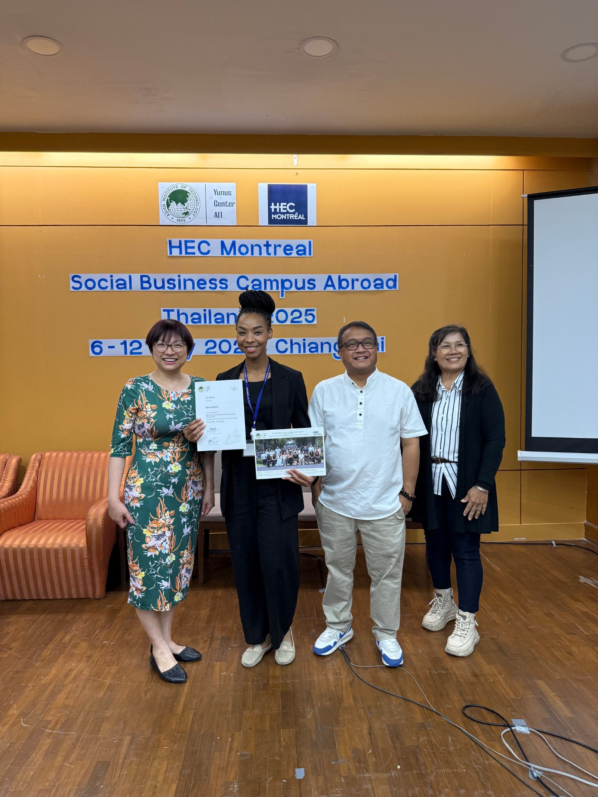
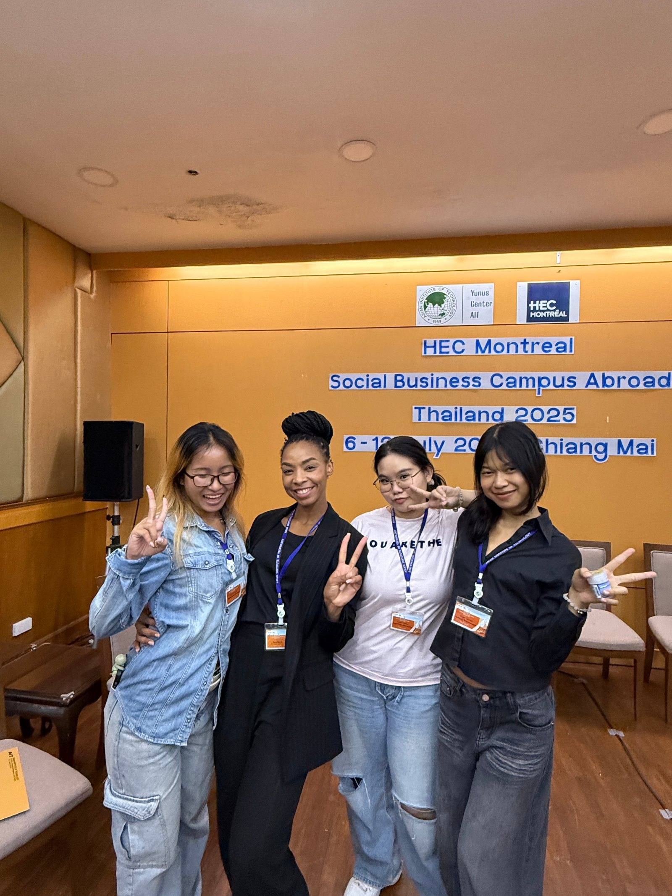
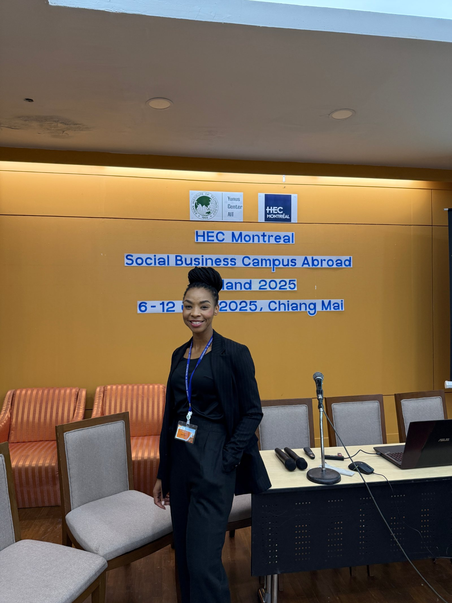
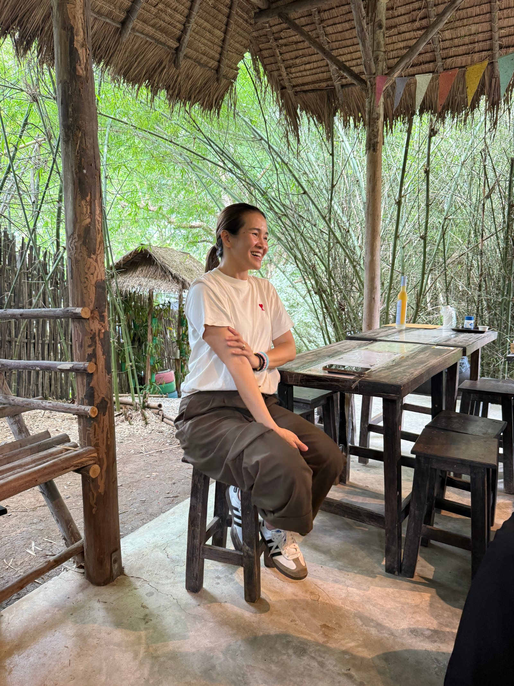

Dans le cadre d’un mandat international, j’ai eu l’opportunité de faire partie d’une équipe multidisciplinaire visant à renforcer l’impact et l’efficacité opérationnelle de SOS Kitchen Thailand, une organisation engagée dans la récupération de surplus alimentaires et leur redistribution auprès des communautés dans le besoin.
Diagnostic opérationnel
En collaboration, nous avons réalisé une analyse approfondie des opérations, depuis l’approvisionnement jusqu’à la livraison finale, afin d’identifier les principales inefficacités et les leviers d’amélioration. Notre réflexion s’est articulée autour de trois axes stratégiques : le renforcement de la capacité opérationnelle, l’optimisation de l’engagement des bénévoles et le développement de modèles de financement plus durables.

Solutions proposées
En tant qu’équipe, nous avons proposé des solutions innovantes, notamment un modèle de partenariat corporatif en responsabilité sociale (CSR) pour répondre aux enjeux de main-d’œuvre, une plateforme digitale visant à mobiliser des bénévoles flexibles (« Rescue Runners »), ainsi qu’un concept de financement transformant les achats du quotidien en impact social (« Your snack, their meal »).
Apprentissages
Cette expérience m’a permis de contribuer à une initiative à fort impact social, tout en appliquant une approche stratégique et axée sur les données dans un contexte réel. Elle a renforcé mon engagement à utiliser la donnée, la collaboration et l’innovation pour bâtir des systèmes plus efficaces, inclusifs et durables.
Projet réalisé en juillet 2025 sur le terrain en collaboration avec : Imogen Gardner, Yvette Ingrid Mejo Mobam, Cindy Rios, Florence Benoit, Lison Herlant.
Souvenirs du terrain
Quelques moments capturés lors du mandat à Bangkok : cuisine, logistique de redistribution et échanges avec les équipes locales.







